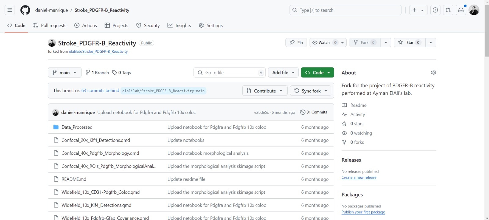

Traitement et organisation des données de recherche
un guide à l’usage des chercheurs
Rendre les ensembles de données compréhensibles
Les données de recherche existent sous de nombreuses formats (tableaux, images, vidéos, texte).
Dans tous les cas, il est essentiel que l’ensemble de données ait une structure claire et soit compréhensible par d’autres.
Tip
Essayez de vous mettre à la place d’un observateur externe lorsque vous structurez les données.

3. Fournir des métadonnées complètes
Utilisez des métadonnées détaillées (fichiers README et dictionnaires de données/codebook) pour contextualiser et décrire les fichiers de recherche.
![Un tableau présentant un codebook pour un ensemble de données, avec des colonnes intitulées 'Nom de variable,' 'Description,' 'Type,' et 'Valeurs ou caractéristiques.' Le tableau définit des variables telles que l'identifiant du patient, le sexe, la date de la procédure, le groupe de traitement et les résultats cliniques, en précisant les types de données (numérique, date, caractère) et les significations des valeurs (ex. 1=Femme, 2=Homme). Ce codebook fournit une vue d'ensemble structurée des variables utilisées dans la gestion des données de recherche.](images/Codebook.jpg)
Les tableaux sont au cœur des données de recherche
Bien qu’ils soient le type de fichier le plus courant (.xls) pour l’enregistrement et le stockage des données, les tableaux sont les objets les plus mal organisés et inutilisables en recherche.


Exemples issus de recherches publiées
_NatureComm.png)
Exemples de Crystal Lewis (2024)
![Deux tableaux comparant des structures de données. Le tableau de gauche, intitulé 'Pas un rectangle,' présente une structure irrégulière avec un alignement incohérent des noms de variables et des valeurs, rendant son interprétation difficile. Le tableau de droite, intitulé 'Rectangle,' suit un format structuré avec des colonnes clairement définies pour l'ID étudiant, l'âge en mois, le score brut de lecture et le score standardisé de lecture. Cette comparaison met en évidence l'importance d'un format de données bien organisé pour la gestion des données de recherche.](images/Lewis_fig3-3.PNG)
![Deux tableaux comparant la cohérence des valeurs de colonnes. Le tableau de gauche, intitulé 'Valeurs de colonnes incohérentes,' contient des formats de date variés (ex. '10-12-2023,' 'Oct. 15, 2023,' 'September 15') et des valeurs catégoriques incohérentes pour l'achèvement du sondage ('y,' 'Yes,' 'Y,' 'no'). Le tableau de droite, intitulé 'Valeurs de colonnes cohérentes,' normalise les dates au format 'AAAA-MM-JJ' et unifie les réponses catégoriques en 'y' et 'n.' Cette comparaison illustre les meilleures pratiques pour garantir la clarté et la fiabilité des données.](images/Lewis_fig3-4.PNG)
![Deux tableaux comparant les formats de variables. Le tableau de gauche, intitulé 'Variable de type caractère,' contient des valeurs d'âge incohérentes : un espace avant '24' fait de cette entrée un texte, '49 years old' ajoute du texte inutile, et '36..0' contient une erreur de formatage. Le tableau de droite, intitulé 'Variable numérique,' stocke correctement les âges sous forme numérique sans espace, texte superflu ou erreurs de formatage. Cette comparaison met en évidence l'importance du nettoyage des données numériques pour une analyse correcte.](images/Lewis_fig3-5.PNG)
![Deux tableaux comparant la structuration des données. Le tableau de gauche, intitulé 'Deux informations dans une seule variable,' combine le nombre d'incidents et le nombre total d'inscrits en une seule colonne (ex. '55/250'), rendant l'analyse plus difficile. Le tableau de droite, intitulé 'Deux informations dans deux variables,' sépare ces valeurs en colonnes distinctes : 'incident' pour le nombre d'incidents et 'enrollment' pour le nombre d'inscrits. Cette structuration facilite l'analyse et suit les bonnes pratiques de gestion des données.](images/Lewis_fig3-6.PNG)
Exemples de Crystal Lewis (2024)

![Deux tableaux comparant l'utilisation explicite et implicite des variables. Le tableau de gauche, intitulé 'Variables non explicites,' utilise la couleur des cellules pour indiquer les conditions de traitement, ce qui peut être mal interprété ou perdu dans l'analyse. Le tableau de droite, intitulé 'Variables explicites,' ajoute une colonne 'treatment' avec des valeurs numériques (0 ou 1) pour indiquer explicitement la condition de traitement. Cette approche garantit une meilleure transparence des données et facilite leur analyse.](images/Lewis_fig3-8.PNG)
Formats de tableaux larges
![Un diagramme illustrant la transformation entre les formats de données long et large. Le tableau de gauche représente un format long où chaque ligne contient un 'pays,' une 'année' et une valeur associée. Le tableau de droite montre le format large, où les années sont réparties sur plusieurs colonnes (ex. 'yr1960', 'yr1970', 'yr2010'). La fonction `pivot_wider()` transforme les données en format large, tandis que `pivot_longer()` effectue l'opération inverse, facilitant l'analyse des données longitudinales.](images/Lewis_fig3-14.PNG)
Dans un tableau au format large, chaque sujet occupe une seule ligne et les variables sont disposées en colonnes distinctes : sujet, Id1, Id2, Var1, Var2, Temps 1, Temps 2, Temps 3.
Tip
Ici, les colonnes représentent des réponses ou prédicteurs dans une régression. Exemple :
Cells_7D ~ Cells_2D + Cells_3D.
Formats de tableaux longs
![Diagramme illustrant la transformation de données longitudinales de tableaux séparés en un format long. Les tableaux du haut et du bas représentent les « données de la première vague » et les « données de la deuxième vague », chacune contenant les mesures de l'anxiété (« anx1 » et “anx2”) pour les étudiants identifiés par « stu_id ». Le tableau de droite, intitulé « Long format data », restructure les données en ajoutant une colonne « vague », chaque ligne représentant les mesures d'un étudiant à une vague spécifique. Cette transformation optimise l'ensemble des données pour une analyse longitudinale et un stockage efficace.](images/Lewis_fig3-15.PNG)
Dans un tableau au format long, chaque sujet occupe plusieurs lignes et possède des observations associées sur différentes lignes :
sujet (répété), Id1, Id2 (répété), Temps (1, 2, 3).
Tip
Utile pour l’analyse des données temporelles, regroupant différentes variables de condition en une seule colonne. Exemple :
Cells ~ PointTemps (1D, 2D, 3D).
Le format long est généralement privilégié pour l’analyse des données.
Le meilleur dans tout ça…
Vous pouvez utiliser R (ou Python) et Quarto pour convertir un tableau du format long au format large, et inversement.
![Diagramme illustrant la transformation entre les formats de données long et large en utilisant `pivot_wider()` et `pivot_longer()`. Le tableau de gauche représente des données au format long, où chaque ligne contient un « pays », une “année” et une valeur « métrique » correspondante. Le tableau de droite représente des données au format large, où les valeurs de l'année sont réparties sur plusieurs colonnes (par exemple, “yr1960”, “yr1970”, “yr2010”), chacune contenant la valeur métrique correspondante pour chaque pays. La fonction `pivot_wider()` convertit le format long en format large, tandis que `pivot_longer()` inverse le processus, démontrant ainsi la flexibilité de la mise en forme des données dans R.](images/LongToWide.png)
Tip
Consultez les tutoriels R et python.
Fournir des métadonnées (fichiers README)
- Les ensembles de données sont incompréhensibles s’ils ne sont pas accompagnés de dictionnaires de données ou de codebooks (.txt, .md, .csv) décrivant les variables des tableaux de données. Cela peut également prendre la forme d’un fichier README (.txt, .md) qui décrit leur contexte et leur contenu.
![Une capture d'écran de métadonnées descriptives pour un ensemble de données sur la réactivité des cellules PDGFR-B+ dans un modèle murin d'ischémie cérébrale. Le texte détaille l'origine des images, les conventions de nommage des fichiers, le contenu des dossiers et les conditions expérimentales. Il explique également le processus de génération des images à partir des fichiers Zenodo, leur traitement avec CellProfiler et fournit des liens vers des articles de recherche et des dépôts OSF pour plus d’informations.](images/DescriptiveMetadata_czi.png)
Convertir les images en formats ouverts
![Capture d’écran d’un script macro ImageJ écrit en JavaScript. Le script automatise la conversion des fichiers d’imagerie microscopique `.czi` en format `.tif`. Il demande à l’utilisateur de sélectionner un répertoire, récupère la liste des fichiers `.czi`, et traite chaque fichier en l’ouvrant avec le Bio-Formats Importer. Il extrait ensuite deux canaux d’image et les enregistre séparément en tant que fichiers `.tif` dans un dossier 'Images_Tiff'. Le script garantit un traitement systématique de tous les fichiers et ferme toutes les fenêtres après l’exécution.](images/Transform_czi-tif.png)
Vous pouvez facilement convertir vos fichiers propriétaires (.czi) en formats ouverts (.tif) en utilisant, par exemple, des scripts FIJI (lien).
Caution
Enregistrer des images .czi en .tif avec FIJI entraîne une perte de métadonnées (archivées dans le fichier .czi).
Suivre les métadonnées
Techniques
Exportez les métadonnées techniques des images propriétaires (ex. .czi) en fichiers .txt ou .csv (cela peut être appliqué à toutes les images d’un lot).
![Capture d’écran de la visionneuse de métadonnées affichant les métadonnées techniques d’un fichier d’imagerie microscopique `.czi`. Le tableau des métadonnées comprend des clés et des valeurs telles que 'BitsPerPixel' (14), 'DimensionOrder' (XYZCT), et 'PixelType' (uint16). D’autres détails indiquent que l’image contient 4 canaux (SizeC), un seul point temporel (SizeT = 1), des dimensions de 2752x2208 pixels (SizeX, SizeY), et un seul plan Z (SizeZ = 1). Ces métadonnées fournissent des informations essentielles pour le traitement et l’analyse d’images en microscopie de recherche.](images/TechnicalMetadata_czi.png)
Descriptives
Générez des fichiers README descriptifs pour expliquer la provenance et les conventions de nommage des images.
Un paysage de recherche préoccupant
Nous vivons une pandémie de recherche frauduleuse et irréproducible.

Ce paysage préoccupant exige que, en tant que chercheurs responsables, nous appliquions de bonnes pratiques de recherche pour partager les données et les procédures d’analyse.
Définir la structure d’un ensemble de données
Un ensemble de données structuré est la clé pour le comprendre et le réutiliser.

![Un arbre de répertoires structuré représentant un projet de recherche organisé. Les dossiers de premier niveau incluent 'Code,' contenant des scripts R pour le nettoyage et l'analyse des données ('clean_raw_data.r,' 'analysis_1.r,' 'analysis_2.r'); 'Data,' divisé en 'Raw_data' (avec les fichiers bruts 'file_a.raw' et 'file_b.raw') et 'Processed_data' (contenant les fichiers CSV nettoyés 'file_a.csv' et 'file_b.csv'); 'Outputs,' qui comprend des sous-dossiers pour 'Figures' et 'Models'; ainsi qu'un fichier 'README.txt'. Cette organisation suit les bonnes pratiques pour la gestion des données de recherche.](images/files.png)
Explorer l’arborescence des dossiers
TIER 4.0 est un modèle de projet conçu pour standardiser les ensembles de données.
Téléchargez la structure du projet et adaptez-la à des cas spécifiques.
![Une structure de répertoires hiérarchique suivant le protocole TIER 4.0 pour l'organisation des données de recherche. Le dossier racine 'Project/' contient des documents clés tels que 'The Read Me File' et 'The Report.' Le dossier 'Data/' est divisé en 'InputData/' (avec les sous-dossiers 'Input Data Files' et 'Metadata,' incluant 'Data Sources Guide' et 'Codebooks'), 'AnalysisData/' (avec 'Analysis Data Files' et 'The Data Appendix') et 'IntermediateData/'. Le dossier 'Scripts/' comprend des sous-dossiers pour 'ProcessingScripts/', 'DataAppendixScripts/', 'AnalysisScripts/', ainsi que 'The Master Script.' Enfin, le dossier 'Output/' contient 'DataAppendixOutput' et 'Results.' Cette organisation garantit la transparence et la reproductibilité dans la gestion des données de recherche.](images/tier.png)
Données brutes
Un dossier Data_Raw/ peut contenir :
- Images originales (.tiff, .czi)
- Fichiers de sortie des appareils de mesure (.txt, .csv)
- Feuilles d’enregistrement originales (.png, .csv, .xlsx)

Données d’analyse (traitées)
Un dossier Data_Analysis/ contient des fichiers traités utilisés pour générer les résultats de la recherche.
Métadonnées similaires aux données brutes.
Fichiers Data_Appendix présentant des statistiques descriptives de base ou des distributions de données.

Le script est la voie à suivre
Bien que la plupart des chercheurs soient plus à l’aise avec les interfaces graphiques (GUI), le paysage actuel de la recherche exige l’utilisation de scripts et de code pour garantir la reproductibilité des résultats de recherche.
![Un mème humoristique sur le thème de la Guerre des étoiles comparant différents langages de programmation. L'image est divisée en trois sections, chacune montrant un personnage de Star Wars brandissant un sabre laser. À gauche, Luke Skywalker, avec un logo de langage de programmation « R », tient un sabre laser bleu. Au centre, Kylo Ren brandit un sabre laser rouge à garde transversale portant le logo GraphPad. À droite, Mace Windu, associé au logo Python, tient un sabre laser violet. Ce mème dépeint avec humour les rôles perçus des logiciels libres dans le paysage de la recherche.](images/Theway.png)
Tip
Le codage doit être considéré comme une compétence essentielle au même titre que d’autres méthodes de recherche.
Outils pour gérer le code et les scripts
R-Studio/Quarto (R + Python)

GitHub (Contrôle de version)

Avec R-Studio (R et Python), vous pouvez
R-Studio/Quarto (R + Python)
Manipuler des tableaux de données et variables avec R et le package Tidyverse.
Traiter des fichiers et données de cytométrie en flux avec R et FlowCore de BioConductor.
Analyser des données de RNA-seq avec R et DESeq2 de BioConductor.
Effectuer des modélisations statistiques avancées avec brms.
Et bien plus encore…
Communautés internationales de soutien au codage
Fichiers README
Les fichiers README sont des guides pour comprendre les ensembles de données et les tableaux.
![Capture d’écran d’un fichier README sur GitHub pour le 'Bootstrap Ruby Gem,' une bibliothèque utilisée dans les applications Ruby on Rails. Le README affiche un badge indiquant que la construction du gem est réussie et que la version 4.1.1 est disponible. Le document fournit des instructions d’installation, expliquant comment ajouter le gem au fichier Gemfile et assurer la compatibilité avec 'sprockets-rails.' Le guide fait référence à différents environnements, notamment Ruby on Rails et d’autres frameworks Ruby. La page contient des extraits de code formatés pour faciliter l’intégration dans un projet Rails.](images/readme.webp)
Il existe des modèles et des ressources pour guider la rédaction des fichiers README : - Créer un fichier README
- Readme.so
- Readme.ai